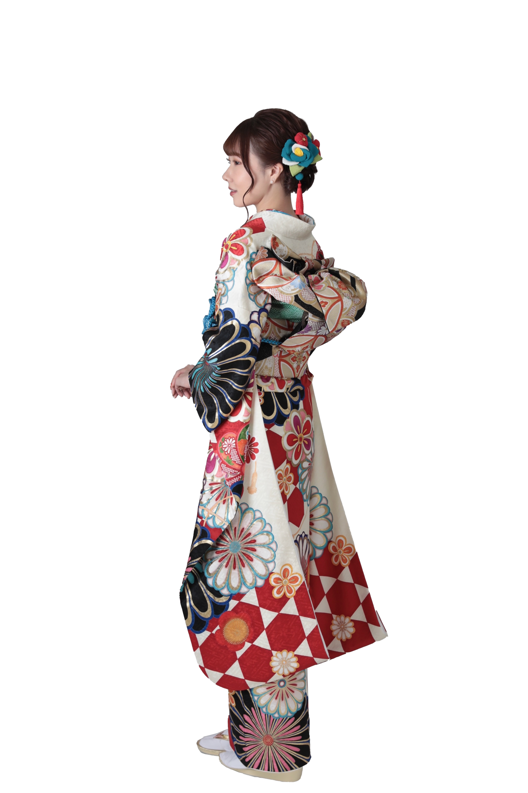
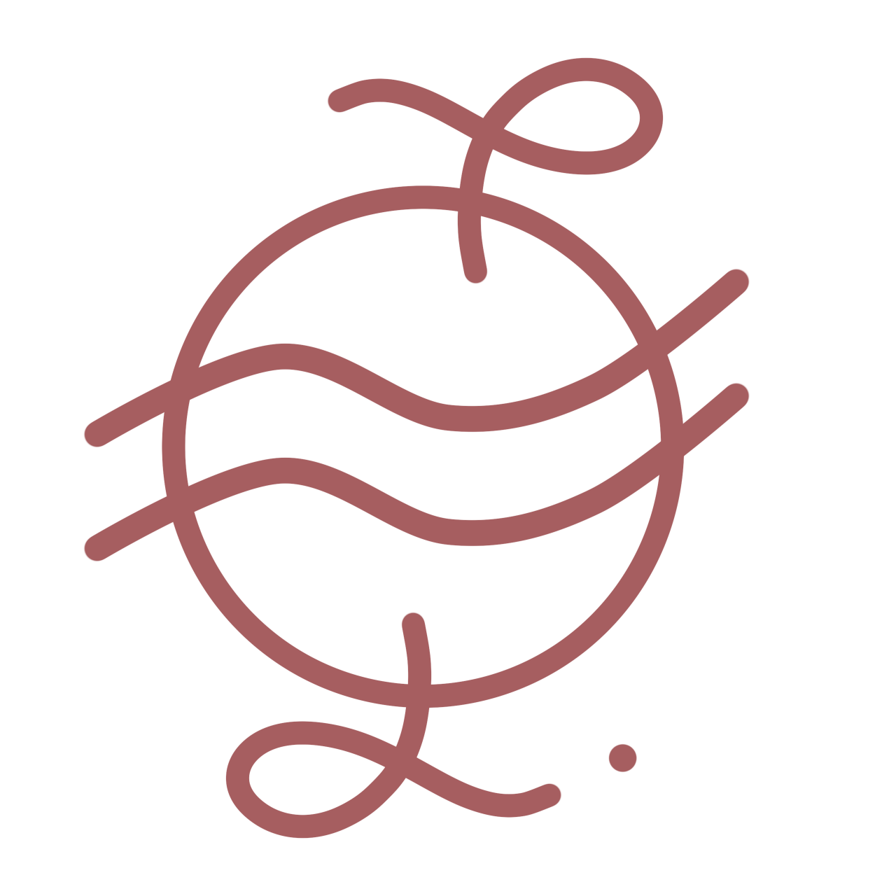

Profile
Profile


2003年1月21日、千葉県船橋市生まれ。
大妻女子大学 社会情報学部 情報デザイン専攻 3年。
幼少期から好きだった絵や字を書くことに加え、依頼に最大限に応えることへの
喜び・やりがいから高校時代のアルバイトで経験したPOP制作に興味を持つ。
2019年4月に放送されたTBS 火曜ドラマ『わたし、定時で帰ります。』を見て
Webデザイナーという職業を知り、デザインと情報を組み合わせて何かを作ること・伝えることを学びたいという思いから【情報デザイン専攻】への入学を決意。
現在はWebデザインに限らず、より広い範囲で
情報を伝える役割を担う“広告”に
関心を抱いている。
今後は広告に関する業界知識をさらに深め、将来的な目標
である広告会社で働くために必要なスキルを身につけていきたい。
